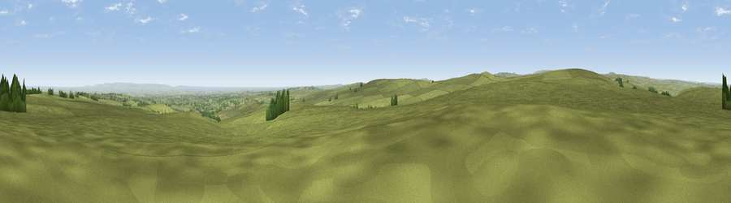

Viewpoint c9480_8324
#11256 in England · top 16% of its area beats it · —The view, rendered

A 360° render of this exact spot computed from the terrain model, tree cover and land cover — summer colours, afternoon light, calibrated against photographs of famous viewpoints. Real trees, hedges and buildings will differ in detail.
The panorama
Grey silhouette: terrain skyline in each direction (720 bearings, Earth curvature and refraction included). Dashed green: skyline with trees (+15 m) and buildings (+8 m) as obstacles. Blue strip: how far the ground is visible on each bearing.
Where the view opens
Wedge length = distance to the farthest visible ground on that bearing (vegetation-aware). Rings at 10, 25 and 50 km.
What fills the view
91% grassland · 5% cropland · 3% woodland ·
Angular shares of the visible panorama (visual magnitude), not map area. Landscape diversity 0.16 (0–1 Shannon).
Key numbers
More beautiful places nearby
The staircase of upgrades: each row has a higher view potential than everything closer. Driving times are estimates from straight-line distance, calibrated against real road routing — check an actual route before setting out.
| Place | Direction | Drive | Score |
|---|---|---|---|
| Viewpoint near Lofthouse | WNW · 2 km | ~4 min | 65.1 |
| Viewpoint near Lofthouse | WNW · 3 km | ~6 min | 65.8 |
| Viewpoint near Swinton | NE · 5 km | ~12 min | 68.4 |
| Viewpoint near Grewelthorpe | ENE · 7 km | ~15 min | 73.9 |
| Viewpoint near Bewerley | SSW · 10 km | ~20 min | 76.8 |
| Viewpoint near East Witton | NNW · 11 km | ~21 min | 77.8 |
| Viewpoint near Kirby Knowle | ENE · 32 km | ~50 min | 80.5 |
| Viewpoint near Thirlby | ENE · 36 km | ~54 min | 81.5 |
54.16178, -1.75302 · source: screening · position refined by local search. Computed location — check access rights before visiting.